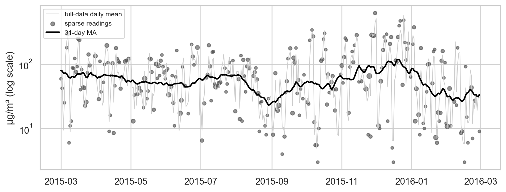
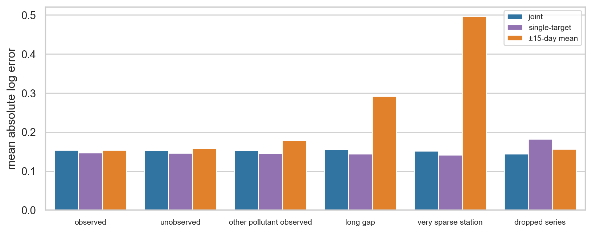
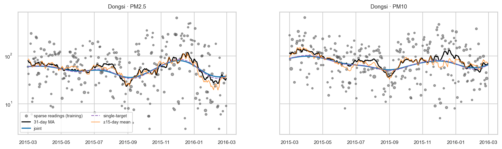
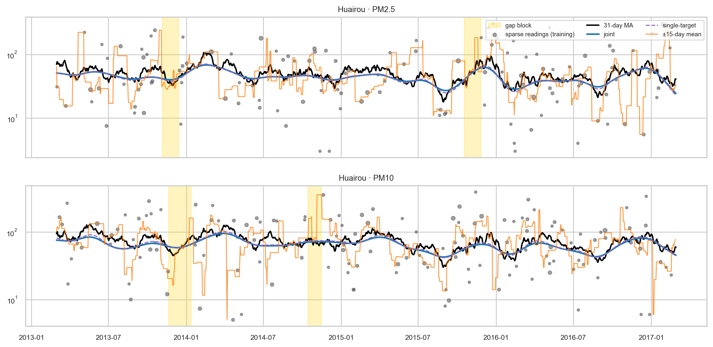
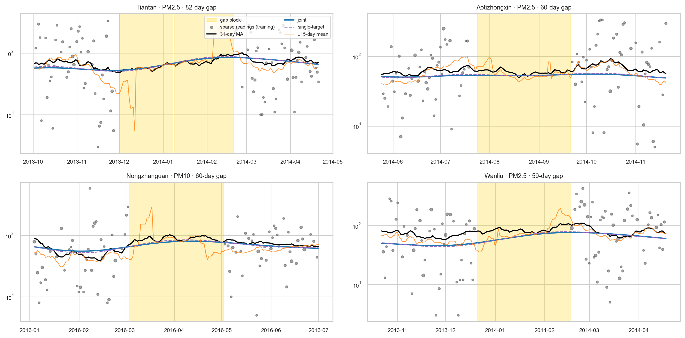

| full: days observed | full: hours per day | sparse: days observed | sparse: hours per day | |
|---|---|---|---|---|
| pollutant | ||||
| PM2.5 | 100% | 23.6 | 66% | 1.7 |
| PM10 | 100% | 23.7 | 67% | 1.7 |
Note
This work was developed with AI assistance
Introduction
Consider a panel of series indexed by location and time, with two related quantities measured in each cell. Each observation is a mean over a handful of raw readings, so it is noisy; many cells have only one of the two quantities, many have neither, and some series go quiet for months. What we want is the prevailing level: a smooth estimate for every location, period and quantity, that does not chase noise but does follow genuine movements, and that still exists where data is missing.
Fitting each series on its own fails exactly where it matters: a series with a long gap has nothing to go on, and a series with one reading a month is mostly noise. Two kinds of sharing should help:
- across locations — nearby or similar locations move together, so a thin series can borrow from its group
- across targets — the two quantities are related, so a month where only one was observed still says something about the other
The approach below does both in one network, and the experiment measures how much each matters.
Data
Real sparse panels have no ground truth: we never get to see the level we are trying to estimate. So we start from a complete dataset, the UCI Beijing Multi-Site Air Quality data: hourly PM2.5 and PM10 at 12 stations from March 2013 to February 2017. The two pollutants are closely related (PM10 includes PM2.5) but not identical.
The unit of analysis is a station-day: the mean of each pollutant over the day’s valid hours, with the number of hours \(n\) kept as a measure of how reliable that mean is. The full data is almost complete (over 99% of station-days), so we thin it to resemble a typical small-area panel:
- each station-day keeps a random Poisson(\(\lambda=1.2\)) number of its hours, drawn separately for each pollutant, so often only one is observed;
- each station and pollutant also loses two blocks of 20–60 consecutive days.
The ground truth is the full data. Estimates are scored against its 31-day MA: the 31-day centred moving average of the full daily means (on the log scale). The full daily means themselves are also kept for reference.
In the sparse data both pollutants are observed on 44% of station-days and exactly one on 45%, with fewer than two readings behind each observed value. The figure shows what that does to one station over a year.

Daily pollution swings by a factor of two or more from day to day with the weather, and a reading of one or two hours adds more noise on top. The level we want is the slow black line.
Model
Architecture
Every row is one station-day with up to two targets: \(y_1 = \log \text{PM2.5}\) and \(y_2 = \log \text{PM10}\) (standardised). The network maps (station, day) to a predicted level for both:
flowchart LR
A["area id<br/>(urban / suburban)"] --> EA["area embedding (8)"]
S["station id"] --> ES["station embedding (8)<br/>starts at 0: an offset"]
EA --> P(("+"))
ES --> P
T["day"] --> TB["Gaussian bumps<br/>every w days (fixed)"]
P --> C["concat"]
TB --> C
C --> L1["Linear → 64, SiLU"] --> L2["Linear 64 → 64, SiLU"]
L2 --> H1["PM2.5 head<br/>Linear 64 → 1"]
L2 --> H2["PM10 head<br/>Linear 64 → 1"]
- Location is the area’s embedding plus a station offset that starts at zero and is penalised, so a station with little data falls back to its area.
- Time enters only through fixed Gaussian bumps, \(b_k(t) = \exp\{-\tfrac12 ((t - c_k)/w)^2\}\) with centres \(c_k\) every \(w\) days. A day becomes a vector of bump values; neighbouring days get nearly identical vectors, so the level cannot jump from one day to the next.
- A shared trunk of two layers with a smooth activation (SiLU) turns location and time into a 64-number summary; two linear heads read the same summary. Everything before the heads is shared, so a day that observed only PM2.5 still trains everything PM10 depends on.
Loss
An observed daily value is a mean of \(n\) hourly readings, so its variance around the level is the reading-level variance divided by \(n\), plus a floor \(\tau^2\) for genuine day-to-day movement the level should not chase. For target \(j\):
\[ \mathcal{L}_{\text{fit}} = \frac{1}{\sum m_{ij}} \sum_{i,j} m_{ij} \left[ \tfrac12 \log v_{ij} + \frac{(y_{ij} - \mu_{ij})^2}{2 v_{ij}} \right], \qquad v_{ij} = \frac{\sigma_j^2}{n_{ij}} + \tau_j^2 , \]
where \(m_{ij}\) is 1 if target \(j\) was observed on row \(i\) and 0 otherwise — a missing target is masked, not dropped. \(\sigma_j\) and \(\tau_j\) are learned, one per target. A day of 24 readings counts far more than a day of one.
Smoothness comes from a penalty on the curvature of every station’s predicted series over the whole day grid, observed or not:
\[ \mathcal{L} = \mathcal{L}_{\text{fit}} + \lambda \, \overline{\left(\mu_{t+1} - 2\mu_t + \mu_{t-1}\right)^2} + \gamma \, \overline{\lVert e_{\text{station}} \rVert^2} . \]
A straight trend costs nothing; bends cost more. Because the penalty covers days without data, it controls the curve inside gaps and at the edges.
Experiment
To see how the model behaves on the hard cases, two stations are degraded further before fitting:
- a dropped series — every PM10 reading at Dingling is removed; only its PM2.5 remains;
- a very sparse station — Huairou keeps only 15% of its (already sparse) days.
Three estimators are fitted to the same data:
- joint — the network above, both targets;
- single-target — the same network trained on one pollutant at a time (two separate models);
- ±15-day mean — for each station and pollutant, the hour-weighted mean of the sparse readings within 15 days; where a station has no readings at all, the same within its area.
Results against the 31-day MA
Every station-day and pollutant is assigned to one group:
- dropped series — Dingling PM10 (no data at all);
- very sparse station — Huairou, both pollutants;
- for every other station: observed (the sparse data has readings that day), unobserved (no readings, outside the gap blocks), long gap (inside a 20–60 day gap block), and among unobserved days those where the other pollutant was observed.
| model | station-days | joint | single-target | ±15-day mean |
|---|---|---|---|---|
| group | ||||
| observed | 20320 | 0.154 | 0.147 | 0.153 |
| unobserved | 8608 | 0.153 | 0.146 | 0.158 |
| other pollutant observed | 6544 | 0.152 | 0.145 | 0.178 |
| long gap | 1753 | 0.156 | 0.144 | 0.292 |
| very sparse station | 2922 | 0.152 | 0.141 | 0.496 |
| dropped series | 1461 | 0.144 | 0.182 | 0.156 |
Errors are mean absolute log errors against the 31-day MA (0.15 ≈ 15%). On an observed day the raw sparse reading itself misses it by about 0.7–0.8, so all three estimators remove most of the noise. The differences are in the hard cases:
- Long gaps: the networks carry the level through (joint 0.156, single-target 0.144), while the ±15-day mean runs out of data (0.292).
- Very sparse station: with only 15% of its days, Huairou’s own data is too thin for a moving average (0.496). Both networks do as well as on regular stations (joint 0.152, single-target 0.141), because the strong smoothing and the shared area pattern fill in what the station lacks.
- Dropped series: this is where modelling both pollutants together pays off. With no PM10 at Dingling at all, the joint model infers it from Dingling’s PM2.5 (0.144), while a single-target model can only fall back to the area (0.182). The joint model also beats the area moving average (0.156).
- Everywhere else, sharing costs a little. On observed, unobserved and long-gap days the single-target models are slightly more accurate than the joint model (for example 0.147 vs 0.154 on observed days). When a station has its own data for a pollutant, borrowing from the other pollutant adds little and forces one shared trunk to serve both.
- Densely observed days: the simple ±15-day mean is level with the networks (0.153). Its 31-day window is the same as the benchmark’s, which flatters it.
Pollution at all stations also moves together from day to day (weather is citywide). The moving averages pick that up from same-day readings, while the network’s only notion of time is a smooth curve. A shared day-level effect in the network is the obvious next step.

What the fits look like
A well-observed station. Over a year at Dongsi, all three estimators follow the level. With this much data the moving average tracks it closely. The network curves are much smoother: they follow the seasons but flatten shorter episodes, such as the December 2015 peak.

A very sparse station. With only 15% of its days left, Huairou’s own data is too thin for the moving average, which jumps around. Both networks lean on the suburban area and the shared time pattern and stay close to the level; the joint and single-target curves are almost indistinguishable.

A dropped series. Dingling’s PM10 was never seen. The joint model reconstructs it from Dingling’s PM2.5 (top); the single-target PM10 model has nothing station-specific to go on and returns the suburban area’s level, which sits too high. The joint curve follows the shape but runs a little low and misses some peaks. The orange line here is the area moving average, which tracks day-to-day movements from the other suburban stations.

Long gaps. The four longest gap blocks at regular stations. Once its window empties, the moving average either stops or swings on the few readings at its edges; the networks carry on smoothly. The joint and single-target curves overlap, and both sit slightly below the level (see the bias below).

A bias to fix
The network curves sit consistently below the 31-day MA, by 0.11 on the log scale on average (about 11%). The model is fitted to the log of means over one or two hours, and the log of a mean over few readings is lower on average than the log of a mean over 24 (Jensen’s inequality). The textbook lognormal correction (\(+\tfrac12\sigma^2\)) overshoots by about as much in the other direction, because the reading level spread mixes within-day and between-day variation. Modelling the hourly readings directly, or estimating the correction as a function of \(n\), would fix it; it is left for a followup.
Takeaways
- Mask, don’t drop. Treating a missing target as missing in the loss, rather than discarding the row, is what lets one target fill in for the other. Here it paid off for an entirely missing series; where a pollutant had its own data.
- Weight by information. Variance \(\sigma^2/n + \tau^2\) lets a 24-hour mean outweigh a single reading, and stops the model from chasing day-to-day movement.
- Make smoothness explicit. Smooth time bumps plus a curvature penalty over every period, observed or not, keep the level stable through gaps and at the edges.
- Share across locations with offsets. A thin station falls back to its area instead of to nothing.
- Know what the network cannot see. With time entering only as a smooth curve, it misses shared day-to-day shocks that a simple same day average catches; where data is dense, simple smoothing is hard to beat.